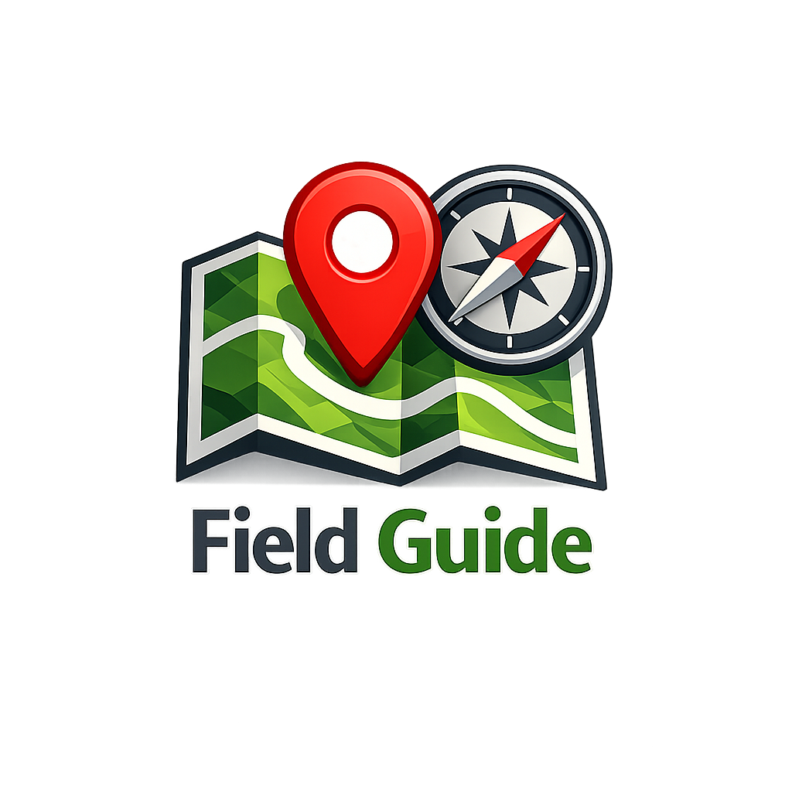

Area inspection
Mark locations with possible issues and keep a clear record for evaluation and follow-up.

Field GuideField Guide helps you register important locations, generate marks inside polygon features, open Google Maps routes, and create mobile-ready PDF reports with route and point links. It also lets you delete selected marks and use spatial sampling methods designed for field workflows.
Less rework, clearer sampling layouts, and more confidence for the team in the field.
Designed for area inspections, sampling guidance, and field routines that need clear map-based outputs.
Mark locations with possible issues and keep a clear record for evaluation and follow-up.
Generate better-distributed marks inside polygons to guide collection and field sampling routines.
Share routes and PDF outputs with the team and open everything on mobile during field work.
A practical set of tools for polygon sampling, route review, and field reporting.
A direct workflow for field teams that need to move from map review to execution fast.
Click on the map, import a CSV, or generate marks inside polygon features with centroid, grid, spread, or zigzag methods.
Review the live session list, delete a selected mark when needed, and export CSV to share the same route with your team.
Open route in Google Maps and generate an organized PDF for mobile consultation.
Generate marks inside each polygon feature using methods designed for practical spatial distribution in the field.
Use CSV files to move points between planning, execution, and review without repeating manual entry.
The final document is designed for quick reading with clean visuals and route and point links for on-the-move usage.
Technology and field intelligence working together to support practical operations.
Ask FARM about exclusive custom commercial solutionsField Guide is a free and open project created to support field routines with more clarity and practicality.
Developed by FARM Analytica, with a focus on solutions that connect technology and field work.
Learn more at farmanalytica.com.br.